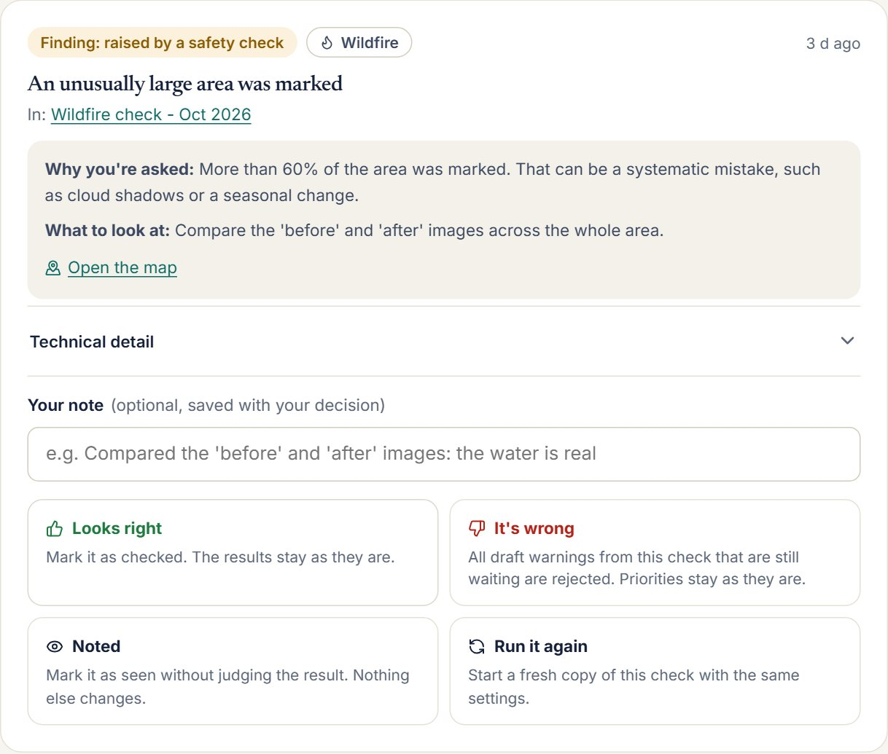
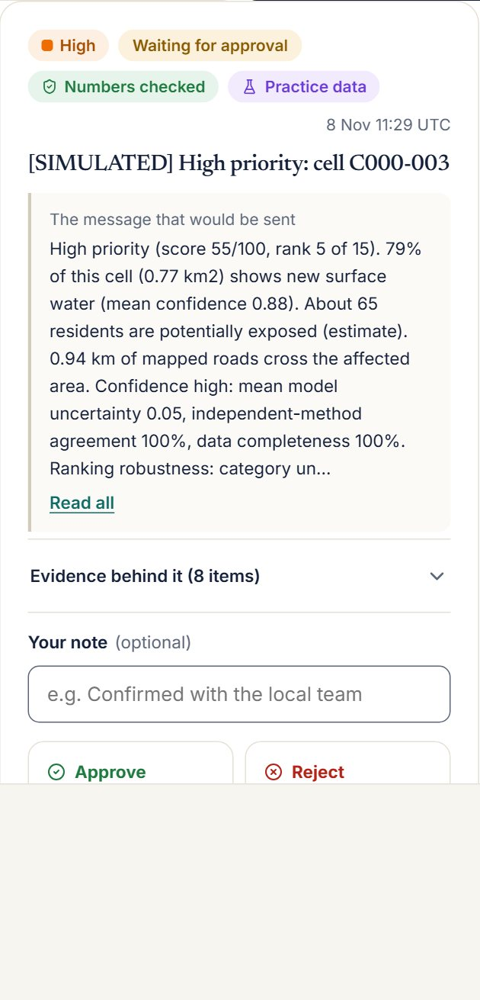
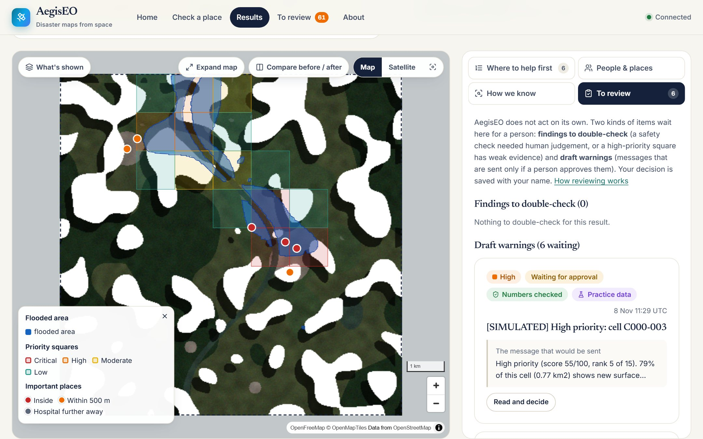

AegisEO prepares; a person decides. This chapter explains precisely what each review-related term means, why it exists, what causes it, how it is implemented, what the user is expected to do, what happens afterwards, and where the information is stored.
A satellite-based map can be wrong in convincing ways: cloud shadows can look like water, a desert can confuse a model trained on green floodplains, and a landslide indicator can fire on a newly ploughed field. Acting on a wrong map wastes scarce resources; publishing a wrong warning causes alarm and erodes trust. AegisEO therefore runs at an advisory autonomy level: the software may search, compute and draft on its own, but anything with consequences outside the system, and anything it is unsure about, waits for a named person. This principle is enforced in code, not only in the interface: the agent has no permission to send anything (Section 6.5).
| Term (interface) | What it is | Who acts | What happens next |
|---|---|---|---|
| Safety check guardrail | One of 18 automatic tests (G01-G18) run during every check on the request, the images, the result and any text written. | Automatic | Each check passes, records a note, asks for a person, or stops something unsafe. |
| Note guardrail outcome "warn" | A recorded caution that needs no action, for example "the radar images were taken from different orbits". | Automatic; the user reads it | Shown under "Safety-check notes"; the check ends as "Done, with notes". |
| Finding to double-check review task | An item a person must decide on, created when a safety check needs human judgement or a Critical/High square has weak evidence. | A person (analyst role) | Choose Looks right, It's wrong, Noted or Run it again; the check's status updates. |
| Draft warning alert | A short message about the area or a high-priority square, written automatically and checked number by number. | A person approves or rejects | Approved warnings are sent only if a delivery channel exists; otherwise they stay inside AegisEO. |
| Approval | A named person's decision that a draft warning may be released. | A person | Publication check G18, then delivery or "kept in AegisEO". |
| Priority change override | A person replaces a square's category, with a reason, when they know something the images cannot show. | A person | Shown in the list and the report; AegisEO's own ranking is kept beside it. |
| Needs a person to check status needs_review | The status of a finished check that has at least one open finding. | Set automatically | Becomes "Done, with notes" when every finding is answered. |
A guardrail is a check placed between the steps of an automated process that can stop or redirect it. AegisEO's 18 guardrails are plain functions in backend/aegis/agents/guardrails.py, with their thresholds written as named constants so they can be read, reviewed and tested. Each returns one of four outcomes:
| Code | Stage | What is checked | Threshold | Outcome if it fails |
|---|---|---|---|---|
| G01 | Request | Disaster type is supported | flood, wildfire, landslide | stop rejected |
| G02 | Request | Area size | 0.25-1,500 km² (setting) | stop rejected |
| G03 | Request | Dates consistent; no future event; each search ≤ 120 days | 120 days | stop rejected |
| G04 | Images | At least one usable 'after' image | radar, or optical with > 2% valid pixels | stop no usable images |
| G05 | Images | A 'before' image exists | - | note |
| G06 | Images | Before-after gap | > 60 days | note |
| G07 | Images | Radar before/after from the same orbit | same relative orbit | note |
| G08 | Images | Cloud over the 'after' optical image | > 60% | note if radar exists, otherwise person |
| G09 | Images | Newest image age, for events in the last 30 days | > 10 days | note |
| G10 | Result | The flood model was available | - | person (backup rules used) |
| G11 | Result | Scene resembles the training data (largest channel z-score) | > 1.5 note; > 2.5 person | note / person |
| G12 | Result | Share of the area marked | > 60% | person |
| G13 | Result | Mean uncertainty; agreement with the cross-check | > 0.15; < 55% | person |
| G14 | Result | Share of candidates removed by terrain | > 30% | note |
| G15 | Result | Landslide results always need a person | - | person |
| G16 | Text | Every number, date and citation in written text matches the evidence | 2% or rounding | stop text withheld |
| G17 | Text | No casualty claims, orders or false certainty | list of banned phrases | stop text withheld |
| G18 | Approval | Named approver, valid status, never practice data | - | stop not sent |
A z-score, used by G11, measures how many standard deviations a value lies from the average of the training data; a score above 2.5 means the area's images are statistically unusual compared with everything the model learned from. On the Sindh case study, G11 fired because the dry season's bright desert soils (short-wave infrared band B12) gave a z-score of 3.29.
Every outcome is saved in the guardrail_checks table and is visible under How we know → Safety checks and in the full step-by-step record. Notes also appear under Safety-check notes at the top of the result.
_escalate in agents/orchestrator.py; decide_review in backend/aegis/actions.py).What causes a finding. At the end of the reporting step, the orchestrator calls the tool escalate_to_analyst once for every safety check that asked for a person (kind quality_check) and once for every Critical or High square whose confidence is Low (kind verify_detection). Each call writes one row to the review_tasks table with status open. If any finding exists, the check ends with status needs_review, shown as "Needs a person to check".
What the user is expected to do. Open the finding (on the To review page or the result's To review tab), read Why you're asked and What to look at, open the map (the link jumps to the square concerned), compare the 'before' and 'after' images, optionally write a note, and choose one decision:
| Button | Stored as | Exact effect (from decide_review) |
|---|---|---|
| Looks right | confirm | The finding is resolved; results are unchanged. |
| It's wrong | false_positive | For a square finding: that square's category is overridden to Low with the reason "analyst: false positive", and its waiting draft warnings are rejected. For a whole-check finding: all of the check's waiting warnings are rejected; priorities are unchanged. |
| Noted | acknowledge | Marked as seen, without judging the result. |
| Run it again | request_rerun | A fresh copy of the check (same area, dates and settings) is created and started. |
What happens next. The finding's status becomes resolved, with the decision, the person's name, the time and the note. An entry is written to the audit_log table (for example review.false_positive). When the last open finding of a check is resolved, the check's status changes from needs_review to completed_with_warnings ("Done, with notes"). A second decision on the same finding is refused (HTTP 409 "already resolved"). Later checks of an overlapping area list these corrections (Section 5.9).

build_alerts in agents/narrative.py, ReportingAgent in agents/specialists.py, decide_alert in actions.py).What causes a draft warning. After every finished check, the reporting step builds one situation summary for the whole area and one warning for each Critical or High square, up to five, from fixed templates filled with the measured facts. Each is stored in the alerts table with status pending_review.
How the text is checked. Before storing, each text passes two safety checks. G16 (grounding) extracts every number and date from the text and requires each to match a recorded measurement (within 2%, or the rounding of the displayed value, or as a percentage), and every citation to refer to a recorded fact. G17 (language) rejects phrases such as "confirmed deaths", "casualties", "death toll", "evacuate now", "everyone must evacuate", "guaranteed", "definitely flooded" or "dispatch teams immediately". A text that fails is replaced by a short neutral notice ("Automatically generated text failed verification and was withheld") and marked Text withheld; it can never slip through. During real-data testing this check once blocked a correct text: the population source label "(~30 m)" contained the number 30, which is not a measurement. The guardrail failed safe (it withheld the text rather than letting an unverified number through), and the list of allowed values was then corrected (documented in docs/failure_analysis.md).
What the user is expected to do. Read the message ("The message that would be sent"), optionally open Evidence behind it, optionally write a note, and press Approve or Reject.
What happens next.
rejected; the person, time and note are saved; the warning is never sent; later checks of the area list the rejection.publish_alert tool runs with the person's name as its approval token. If an administrator has configured a webhook (a web address, set in AEGIS_ALERT_WEBHOOK_URL, that receives an HTTP POST with the warning as JSON, for example a messaging system's integration endpoint), the warning is sent there and its status becomes published ("Approved and sent"). Without a webhook, as on this copy, it stays approved ("Approved, kept in AegisEO"); if sending fails, the error is recorded on the warning.The agent itself can never send anything. Its tools are classified by side effect: read_only (fetch data), compute (calculate), write_draft (store drafts and findings) and external (affect the outside world). The tool executor refuses any external tool call that does not carry a person's approval token, and the autonomous agent is never given one; only the approval route of the API, acting for a signed-in person, supplies it. A safety probe in the benchmark (S01) tests exactly this.
AEGIS_AUTH_ENABLED=false), as on the local copy used for this report. Every decision is then recorded under the fixed name local-analyst with the administrator role (backend/aegis/api/deps.py), so the record shows that a person decided but not which person. For real use, sign-in must be turned on with one token per person (AEGIS_API_TOKENS, roles viewer, analyst and admin); the recorded approver is then that person's name.

Under Where to help first, any square can be given a different category with Change this square's priority, for example when a local team reports that the water has receded. A reason of at least 5 characters is required. The new category is stored in priority_cells.override_category beside the original category, with the reason and the person's name; the list and reports show "(changed by a person)" and the original ranking. "Undo my change" restores AegisEO's own category. Each change is written to the audit log (priority.override or priority.override_cleared) and remembered for later checks of the area.
| Stored status | Shown as | Meaning and what to do |
|---|---|---|
queued | Waiting to start | Waiting for a free worker (two checks run at a time). |
running | Working on it | Progress is shown in five stages. |
completed | Done | Every safety check passed. |
completed_with_warnings | Done, with notes | Notes were recorded, or all findings were answered. Read the notes. |
needs_review | Needs a person to check | At least one finding is open. Answer it under To review. |
insufficient_data | No usable images | G04 stopped the check. Make the 'after' search longer or check the date. |
rejected | Couldn't start | G01-G03 refused the request. |
failed / cancelled / interrupted | Something went wrong / Stopped / Interrupted | An unexpected error, a person pressed Stop, or the server restarted. Run it again. |
| Information | Created by | Stored in | Shown in |
|---|---|---|---|
| Safety-check outcomes | Orchestrator (automatic) | guardrail_checks | Safety-check notes, How we know, record, PDF |
| Findings | Tool escalate_to_analyst | review_tasks | To review pages, Home banner, tab badges |
| Draft warnings | Tool draft_alert | alerts | To review pages |
| Decisions, approvals, rejections | A person through the API (analyst role) | review_tasks, alerts, audit_log | "Already decided" lists, dashboard counts |
| Priority changes | A person | priority_cells, audit_log | Square cards, CSV, PDF |
| Sent warnings | Tool publish_alert after approval | alerts.delivery | Warning card; the external webhook (if configured) |